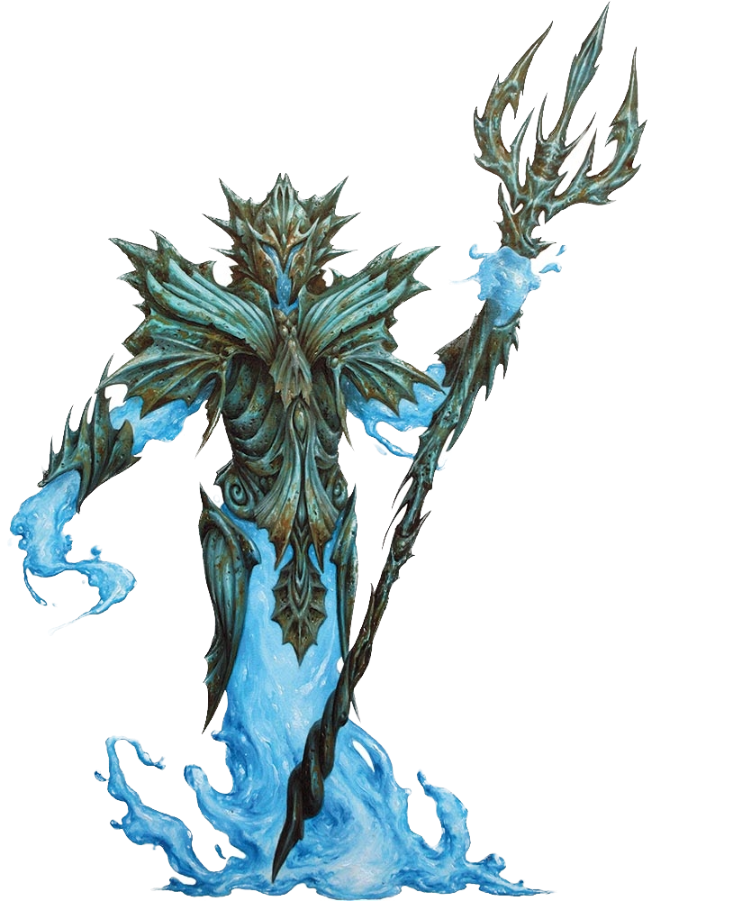

Twenty-Fourth Session
The Beginning of the End
Dramatis Personae
- Actias Aureus, a 10th-level Tiefling Warlock
- Avren Varan, a 10th-level Half-Elf Bard
- Benjamin, a 12th-level Wood Elf Ranger
- Calmul Rhoqiroth, a 12th-level Dragonborn Artificer
- CoralKing, a 12th-level Gnome Monk
- Geral Bryn, a 12th-level Human Fighter
- Orky, a 12th-level Half-Elf Paladin
- Steve, a 12th-level Halfling Rogue
- Viker, a 12th-level Eladrin Druid
- Wulrif, an 11th-level Human Warlock
Summerday +1084 hours
From the journal of Dame Orky
The city appears very smoky and black. Some of our group wakes up coughing and have a level of Exhaustion. Each day, we must avoid Grackle lung. I heal my team as they succumb.
The group heads to the armory for some armor. We stock up and head to The Whorlstone Tunnels. We have 4 visible giant-sized Stone Guard to escort us.

We approach the tunnels and see a fissure in the granite below the docks. It’s about 5 feet wide, but very tall. We enter the tunnel and the ceiling seems to be climbing as we continue. The tunnel is very wet and dimly-lit -- it is Faerzress-Suffused, and dampens any Divination spells or Teleportation abilities as well as adds Wild Magic surges.
We hear chittering outside of our vision range. I see a carpet of writhing insects that are shying away from Actias’s Sunblade. As they move away, we see bones that are completely stripped of flesh. There is some white fur left on some bones that Viker recognizes as matching the hide of the satchel she just bought. One of our familiars notices a trickle of water coming down the wall. The cavern widens out and we see a ramp that continues forward and a second that leads up a level. It appears that we have entered something’s dwelling. Wulrif sends his familiar up to investigate with Steve and they see a mouth that appears in the stone wall, asking what we are doing in its owner’s workshop. Steve freezes in amazement that he was seen. We respond that we are looking for a Derro by the name of Droki. Geral asks who its master is. It responds that its master is busy right now.
Geral walks up, takes one of his rations, and tries to feed the mouth. He is unsuccessful. Then, a giant wave-like creature appears with Plate Mail over his shoulders and a weapon in its hands. Geral responds that we are looking for the master. It remains stoic and blocks our way. Benjamin wants to use Hunter’s Sense on this thing, so he moves forward and analyzes it. Wulrif follows to protect him. Benjamin tells us that it is a Water Elemental Myrmidon, resistant to acid, piercing, slashing, immune to poison, petrification, or being knocked prone. It has no weaknesses.

Geral notices via Blindsight that he is being surprise attacked by something invisible, but is of course, immune due to Sentinel. He alerts us. Invisible Derro appear behind CoralKing, Wulrif, and Actias. All of whom are surprised. Wulrif is attacked 3 times and takes 27 HP bludgeoning and 8 HP psychic damage (he backlashes the other 8HP of psychic damage). Actias takes 43 HP damage. Geral gets hit for 36 HP damage. He hits back three times and misses.

Round 1
- CoralKing readies his action.
- Steve misses a strike.
- Benjamin attacks the nearest Derro with his Shortsword and does 10 HP damage.
- I ready an action. When I am attacked, I cast Searing Smite and attack twice with my Greatsword, but miss.
- Geral swings three times and misses.
- Calmul attempts to hit a Derro, but misses.
- Viker casts Faerie Fire, in a way that hits 2 Derro. We can now see 2 Derro outlined with a dim light. Then, 5 other Derro become visible that have strange energy blades.
- Actias uses Hexblade’s curse and attacks with his Sunblade and Dancing Sword, doing 25 HP damage.
- Steve gets attacked for 24 HP damage. Benjamin just dodges the giant flame. I get hit for 20 HP damage, but react and hit the creature for 61 HP damage, killing it. CoralKing gets hit for 20 HP damage, but reacts and hits the creature for 27 damage, killing it. Geral gets stabbed 3 times.
- Wulrif Hexes the nearest Derro and attacks with Eldritch Blast but misses.
- Avren casts Dispel Magic and dispels the Invisibility on one of the creatures closest to me.
- Suddenly these gross monster-like creatures come out of the darkness that look like they are sewn-together deceased body parts. Steve gets hit for 23 HP damage.
- Wulrif gets hit twice for 25 HP damage. Actias uses Armor of Hexes and uses it to avoid a hit.
Round 2
- CoralKing takes 2 blind swings in front of him and does 32 HP damage to the creature.
- Steve hits the invisible creature near Geral and does 24 HP damage.
- Benjamin shoots at the Derro behind him and hits.
- I move to Wulrif, take a Vow of Enmity, and swing twice at the Derro near Wulrif and CoralKing doing 41 HP damage.
- Geral kills a Derro.
- Calmul does 13 HP damage on a Derro near him.
- Viker heals Wulrif for 13 HP. She heals everyone else for 12 HP.
- Actias attacks the cursed Derro for 51 HP damage.
- Steve is pushed off the edge by an Undead and takes 7 HP damage.
- Wulrif casts Eldritch Blast twice and kills one. He also aims for the Water Elemental Myrmidon and does 9 HP damage, throwing it back.
- Avren casts Mass Cure Wounds for 13 HP on everyone injured.
- One of the Undead attacks Geral and misses.
Round 3
- CoralKing moves up to one of the Undead and hits its knees furiously for 44 HP damage.
- Steve stabs at the Undead and does 30 HP damage.
- Benjamin uses Hunter's Sense on the Undead and finds out they are Flesh Golems immune to Lightning, Poison; Bludgeoning, Piercing, and Slashing from non-magical Attacks that aren't Adamantine. They have an aversion to fire.
- I move to the Derro near Actias and hit twice for 49 HP damage, killing it.
- Geral attacks the Golem with his sword three times, doing 42 HP damage. He also uses his Second Wind to give himself 19 HP.
- Calmul shoots the Golem twice with his Musket and does 19 HP damage, killing it!
- Viker speaks a Healing Word for 20 HP on Geral and everyone else gets an additional 12 HP.
- Actias moves forward and hits the Golem for 2 HP damage. He uses his Dancing Short Sword and does 9 HP.
- One Derro shoots Viker, another shoots Geral for 20 HP damage. The Water Elemental Myrmidon stabs Geral once, doing damage.
- Wulrif spends 2 sorcery points and shoots the Water Elemental Myrmidon with Eldritch Blast, pushing it back.
- Avren shoots the Golem with her Shortbow, doing 5 HP damage and enraging the beast.
- The Golem goes berserk and attacks the Derro, killing it.
Round 4
- CoralKing runs up the ramp and attacks a Derro for 28 HP damage, killing it.
- Steve Sneak Attacks the Golem for 60 HP damage, killing it.
- Benjamin casts Hunter’s Mark and hits it for 12 HP damage.
- I move toward the remaining Derro, throw my Hammer at it and do 18 HP damage, killing it.
- Geral approaches the Water Elemental Myrmidon and uses Commander's Strike on Steve to shoot it. Geral hits it for 9 HP damage.
- Calmul shoots the water creature.
- Viker moves her Healing Spirit near Geral and heals him for 32 HP damage. Everyone else gets 12 HP.
- Actias casts Bane on it.
- Geral gets hit twice.
- Wulrif Eldritch Blasts the creature and does 57 HP damage, killing it.
I retrieve my hammer.
A voice says, "Droki, your friends are here!"
The players have decided to pause here and take up the fight next session.